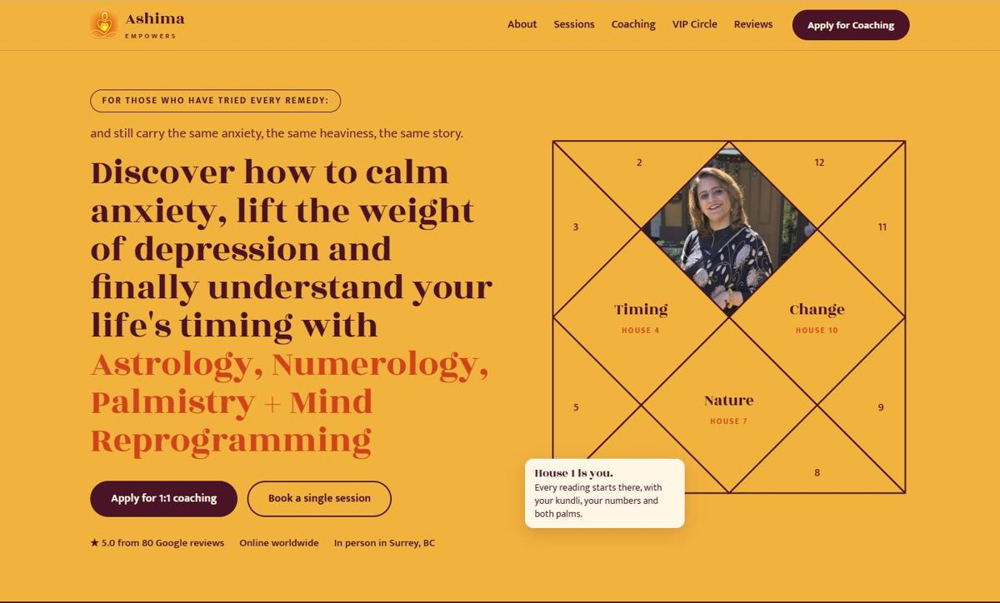
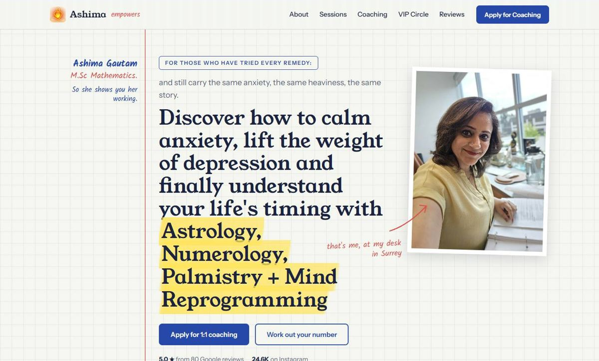
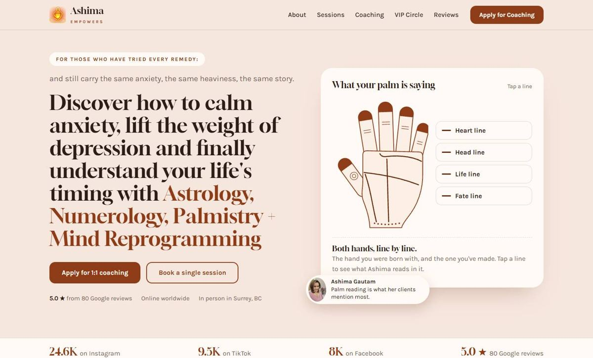

Same words and the same order as the current home page. What changes is the look, and the one thing each version is built around. Each idea comes from Ashima's own world: her kundli, her maths degree, and her palm reading. Open each one on your phone too, and try the interactive part.

Bold and festive: marigold and deep maroon, like a wedding card or a puja thali.
Built around: a real North-Indian kundli that draws itself on the page, with Ashima in house 1. The four practices sit in the main houses.
Open concept A
A maths exercise book: squared paper, a red margin, fountain-pen blue, handwritten notes and highlighter.
Built around: "she studied maths first." Visitors type their birth date and watch their number worked out step by step, the way Ashima does it. Plus a tick-box checklist and every option in one table.
Open concept B
Soft and warm: blush, henna and leaf green. The calmest of the three, closest to the current softness.
Built around: a hand drawn in mehndi style, with henna fingertips. Visitors tap the heart, head, life or fate line to see what Ashima reads in it.
Open concept CThese are design concepts for the home page only. Once one is chosen (or parts mixed, e.g. A's colours with B's calculator), the rest of the site is restyled to match, and the real forms, prices and tracking carry over.